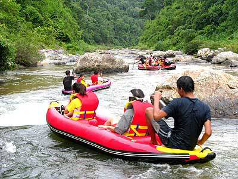

เมนู |
ล่องแก่งคลองกลาย กิจกรรมล่องแก่งด้วยเรือยาง จัดโดย อบต.กรุงชิง อยู่หมู่ที่ 3 ตำบลกรุงชิงใกล้กับน้ำตกกรุงชิงมีเส้นทาง ในการล่องแก่ง 2 ระยะ คือ ปากคลองพิตำ-ลานหินดาน ระยะทาง 2.5 กม. ใช้เวลาประมาณ 1 ชั่วโมง ปากคลองพิตำ-บ้านทุ่งใน ระยะทาง 6 กม. ใช้เวลาประมาณ 3 ชั่วโมง ค่าบริการ 250-350 บาท /คน ติดต่อการใช้บริการ โทร. (075) 309004 และ 01-677-3112  |
| หน้าแรก | |
| วัดพระมหาธาตุ วรมหาวิหาร | |
| วัดเขาขุนพนมและศูนย์วิทยาศาสตร์เพื่อ การศึกษาเขาขุนพนม | |
| ศูนย์ศิลปาชีพบ้านเนินธัมมัง | |
| ศาล หลวงต้นไทร | |
| สวนสมเด็จพระศรีนครินทร์ 84 (ทุ่งท่าลาด) | |
| แหลมตะลุมพุก | |
| วัดแม่เจ้าอยู่หัว (พระนางเลือดขาว) | |
| เขื่อนบ้านพ่อ ปากพนัง | |
| น้ำตกกรุงชิง | |
| ล่องแก่งคลองกลาย | |
| อ่างเก็บน้ำจุฬาภรณ์ | |
| วัดอาตาปีคีรีเขต (วัดถํ้าเพด้าน) | |